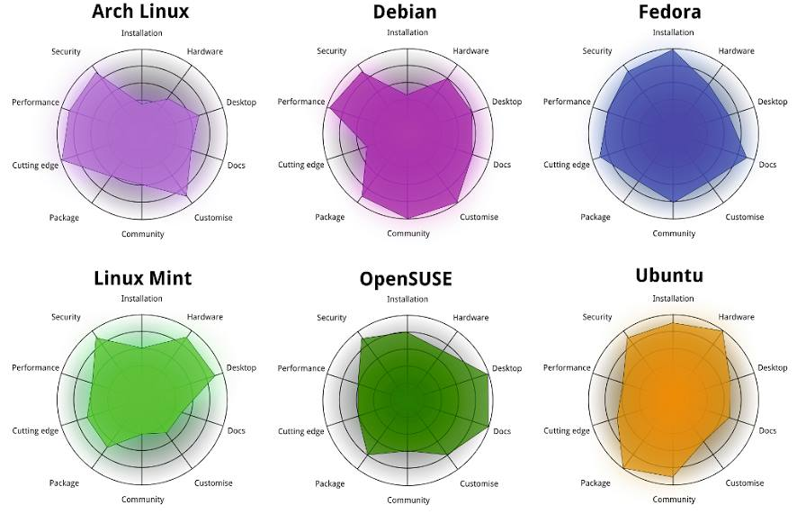
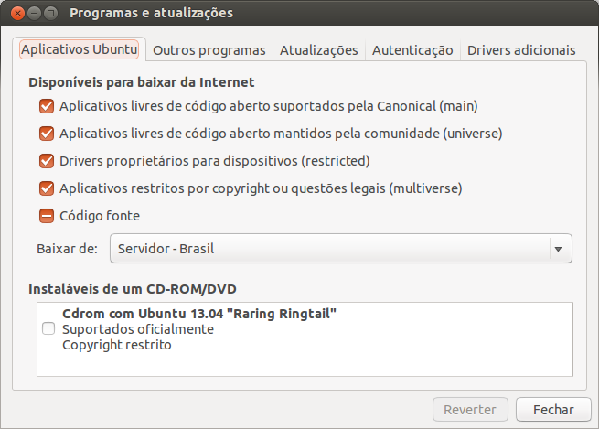

Introdução ao uso do Linux
Conceitos básicos e instalação
Fernando de Pol Mayer & Luiz Ricardo Nakamura
ESALQ/USP - 02 e 03 de Setembro, 2013
Plano do curso
- Software Livre
- Características do Linux
- Principais distribuições
- Contas de usuários
- Comandos básicos
...
Software Livre
Software Livre
Richard Stallman - Projeto GNU (1983)


Software Livre
Linus Torvalds - Linux (1991)


GNU + Linux = GNU/Linux
Software Livre
O que é software livre?
- Software que pode ser utilizado, estudado e modificado sem restrições
- Pode ser copiado e redistribuido (modificado ou não)
- A redistribuição tem uma única restrição: assegurar que os receptores tenham a mesma liberdade
- Para isso é necessário que os desenvolvedores (ou modificadores) disponibilizem o código fonte!
Atenção!
Não confundir software livre com software grátis
Livre como em “liberdade de expressão”, não grátis como “cerveja grátis”
Software Livre
Um software só é considerado livre quando é possível ter as 4 liberdades
- Liberdade para usar o programa para qualquer propósito
- Liberdade para estudar como o programa funciona, e modificá-lo para sua necessidade
- Liberdade para redistribuir cópias (e ajudar o seu vizinho)
- Liberdade para aprimorar o programa, e redistribuí-lo para que todos se beneficiem
Software Livre
Licenças livres
- GNU General Public License (GPL)
- BSD License
- Mozilla Public License
- MIT License
- Apache License
Software Livre
Exemplos de software livre que você já usa
- R!
- OpenOffice
- Firefox, Thunderbird
- Google Chrome (no Linux é Chromium)
- \(\LaTeX\)
Software Livre
Repositórios de software livre
- GitHub http://github.com
- SourceForge http://sourceforge.net
- Google Code http://code.google.com
Software Livre
Quem usa software livre?
- Academia
- Indústria
- Governo
Você!
A internet e a WWW surgiram do mesmo movimento e princípios do software livre
Hoje em dia a grande maioria dos sites usa o servidor Apache e banco de dados POSTGRES para funcionar
Software Livre
Vantagens do software livre
- Projetos colaborativos: pessoas com experiências e visões diferentes contribuem para o benefício comum
- Segurança: Given enough eyeballs, all bugs are shallow
- Qualidade: o que é melhor, 12 ou 1M desenvolvedores?
- Sem “caixa preta”: transparência
- Flexibilidade: você decide o que usar e quando usar
- E também é de graça!
Software Livre
Porque devo me importar?
- Por todas as vantagens acima
- Como cientistas
- Devemos ser transparentes em nossas pesquisas
- Temos que reportar aquilo que estamos fazendo
- Temos que provar os resultados que obtemos
- Nossa pesquisa tem que ser reproduzível
Software Livre
Ciência (Estatística) aberta
Um exemplo: FOAS

O Sistema Operacional GNU/Linux
Sistema Operacional
- É um conjunto de programas que fazem a interface entre o usuário e o hardware
- Sua principal função é o gerenciamento de recursos e periféricos, interpretação de mensagens e execução de programas
- Um SO pode ser dividido em duas partes:
- Núcleo ou kernel desempenha as funções vitais do sistema (baixo-nível) \(\rightarrow\) Linux
- Concha ou Shell é a interface entre o usuário e o kernel. Pode ser em um formato "cru" como a linha de comando ou mais amigável com janelas gráficas \(\rightarrow\) GNU
- O conjunto de kernel Linux e dos programas GNU é o sistema operacional que chamamos de GNU/Linux (ou simplesmente Linux)
Linux
Principais características
- Livre e desenvolvido voluntariamente por programadores experientes, hackers, e contribuidores espalhados ao redor do mundo
- Convive pacificamente com outros sistemas operacionais no mesmo computador (embora não seja a melhor opção...)
- Multitarefa e multiusuário
- Modular: carrega apenas o necessário e libera memória após a utilização
- Não há a necessidade de reiniciar o sistema após a modificar alguma configuração ou instalar programas (apenas na atualização de kernel)
Linux
Principais características
- Roda confortavelmente em sistemas de baixo desempenho (processadores antigos, pouca memória RAM)
- Não é vulnerável à vírus! Devido à separação de privilégios clara entre usuário e administrador, vírus possuem uma ação muito limitada, por isso são inúteis. (Esqueça o anti-vírus!)
- Suporte completo e nativo a diversos dispositivos de comunicação (USB,
Bluetooth, ...)
- Raramente serão necessários drivers externos (com excessão de tecnologias muito novas)
- Os sistemas de arquivos usados pelo GNU/Linux (Ext3, reiserfs, ...) organizam os arquivos de forma inteligente evitando a fragmentação, tornando um poderoso sistema para aplicações exigentes e gravações intensivas. (Esqueça o desfragmentador!)
Linux
Distribuições do Linux
- Devido à sua liberdade, um grupo de pessoas, empresa ou
organização pode decidir distribuir uma versão do Linux com diferentes
características
- Facilidade de uso
- Foco em desempenho
- Agrupar programas de interesse (programação, edição gráfica, ...)
- Cada distribuição tem uma característica própria como o sistema de instalação, objetivo, ..., embora todas apresentem a mesma estrutura básica do Linux
Distribuições do Linux
Veja Distrowatch

Ubuntu
Ubuntu
Origem
- Termo Africano para "humanidade para os outros"
- Uma distribuição Linux baseada na simplicidade, usabilidade e fácil instalação
- Baseado na distribuição Debian, e patrocinada pela empresa Canonical
- Hoje é mantida pela (ampla) comunidade, apoiada pela Canonical
Ubuntu
Características
- Novas versões lançadas a cada 6 meses (em maio e outubro)
- Suporte (atualizações) mantido por 9 meses nas versões normais, e por 5 anos nas versões LTS (Long Term Support)
- Central de programas com mais de 40000 pacotes disponíveis (incluindo R, \(\LaTeX\), \(\ldots\))
- Funciona "Live": através de um pen-drive ou DVD, sem necessidade de instalação
- Diversos "sabores":
Linux
GUIs (Graphical User Interface)
Diversas cascas (shell) existem para o Linux. Algumas das principais são:
Além, é claro, do terminal, onde você possui uma interação mais "direta" com o kernel (veremos adiante).
Aqui você também tem a opção de escolha!
Conheça o Ubuntu 12.04 LTS e sua interface Unity
Procure, abra e mexa:
- Firefox (entre em http://fernandomayer.github.io/linux-intro)
- LibreOffice Writer
- LibreOffice Calc
- gedit
- TeXMaker
- Nautilus
- R (ver link para RStudio Server)
Linux
Estrutura básica de diretórios
O mais importante: no Linux os diretórios são separados por / e
não por \ como no Windows
- Além disso, uma
/(barra sozinha) tem um significado especial: é a raíz de todo o sistema, ou seja, todos os diretórios começam a partir dela.
Alguns dos principais diretórios são:
/bin: arquivos executáveis de programas/boot: arquivos de inicialização do sistema/etc: arquivos de configuração/usr: arquivos de programas (a maior parte)/home: arquivos pessoais do usuário
Estrutura básica de diretórios

Não há lugar como o nosso /home
Linux
O diretório /home
- O único diretório que você terá acesso (permissão de leitura e gravação) como usuário comum
- Cada usuário (em um mesmo computador) possui seu diretório no
/home, completamente independente um do outro/home/fernando/home/nakamura
- Cada usuário possui um nome e uma senha para login
- Arquivos de configuração pessoais ficam sempre em
/home/usuario
Linux
Contas de usuários
- Um conceito fundamental no Linux é a distinção clara entre usuário
comum e o usuário
root, ou o super-usuário - O usuário
rooté único, e ocupa o posto mais alto na hierarquia de permissões (pode fazer tudo!) - Os usuários comuns (no plural) possuem ações limitadas (por exemplo,
não podem instalar programas) e acesso apenas ao
/home - Para um (ou mais) usuários pode ser atribuído os privilégios do
root\(\rightarrow\) são os sudoers (este é o padrão adotado pelo Ubuntu)
Esse é um dos motivos da grande segurança proporcionada pela Linux!
A fisionomia dos super-usuários

O Terminal
Linux
Terminal
- O terminal (ou shell) é um interpretador de comandos que permite a interação entre o usuário e o sistema de uma forma mais direta

Linux
Terminal
- O terminal padrão do Linux é o
Bash, mas existem outros (sh,zsh, ...) - Um terminal pode ser:
- Interativo: comandos são digitados e imediatamente executados
- Não interativo: comandos são organizados em um script e depois executados (shell script)
- Um terminal pode ser aberto como um programa comum na interface (GUI) do Linux
- Ou, sem interface gráfica através dos comandos
<Ctrl><Alt><F1>- Do
<F1>ao<F6>são terminais independentes - A interface gráfica fica no
<F7>
- Do
Linux
Abra um terminal (na GUI):
aluno@lce:~$
- Tudo que está antes de
:é o usuário logado (aluno) e o nome da máquina (lce) - Depois de
:fica o diretório atual- O símbolo
~é um atalho (alias) para/home/usuario
- O símbolo
- Veja:
pwdmostra o diretório atuallslista os diretórios e arquivos presentes no diretório atualwhoami(em caso de dúvida existencial...)
Linux
Terminal
- Em caso de dúvida sobre como funciona um comando ou sua utilidade,
abra a página de ajuda com o
man. Por exemplo,
aluno@lce:~$ man ls
- Navegue com as setas e aperte
qpara sair e voltar ao terminal - Muitas opções podem ser passadas a um comando, sempre precedidas de
-, e com um espaço. Por exemplo
aluno@lce:~$ ls -l
- A opção (flag)
-lfaz com que a saída dolsseja em formato de lista
Linux
Terminal
Mais opções podem ser passadas ao mesmo tempo. Por exemplo
aluno@lce:~$ ls -lah
Estas três opções juntas fazem com que o ls:
- Retorne uma lista
l - Mostre os arquivos ocultos
a(ou--all) - Mostre os tamanhos dos arquivos em formato para humanos
h
Importante!
Arquivos ocultos
- Um arquivo (ou diretório) oculto no Linux é simplesmente um arquivo que
contém um ponto (
.) na frente do nome. - Por exemplo:
arquivo.txté um arquivo normal.arquivo.txté um arquivo oculto
- Normalmente são utilizados para arquivos de configuração
- No Nautilus, aperte
<Ctrl><h>para habilitar/desabilitar a visualização destes arquivos
Linux
Terminal
A saída do comando ls -lah mostra uma série de resultados
interessantes. Por exemplo:
fernando@kirk:~$ ls -lah
total 11M
drwxr-xr-x 42 fernando fernando 4,0K Ago 30 15:24 .
drwxr-xr-x 4 root root 4,0K Jul 25 22:59 ..
drwx------ 3 fernando fernando 4,0K Ago 30 12:37 .dropbox
drwx------ 31 fernando fernando 4,0K Ago 30 12:37 Dropbox
drwxr-xr-x 13 fernando fernando 4,0K Ago 27 22:29 Music
-rw-rw-r-- 1 fernando fernando 47 Jul 26 04:12 .Renviron
-rw-rw-r-- 1 fernando fernando 780 Ago 22 14:23 .Rprofile
drwxrwxr-x 9 fernando fernando 4,0K Ago 6 14:08 Ubuntu One
drwxr-xr-x 4 fernando fernando 4,0K Ago 28 00:58 Videos
Linux
Terminal
De trás pra frente temos
- O nome do arquivo ou diretório
- Um ponto
.significa este diretório - Dois pontos
..representa o diretório acima
- Um ponto
- A data de última modificação
- O tamanho do arquivo, em Kb, MB ou GB (porque usamos a opção
h) - O dono (usuário) do arquivo/diretório e o grupo ao qual pertence
- Normalmente um usuário pertence à vários grupos que dão acesso à arquivos comuns (não iremos nos aprofundar em permissões de grupos)
- O número de arquivos contidos em um diretório (para arquivos será sempre 1)
- As permissões de acesso
Linux
Permissões
A primeira coluna mostra as permissões para cada arquivo/diretório, e funciona assim:

- O primeiro string mostra se é um diretório
dou um arquivo comum- - Os outros 9 caracteres são divididos em três grupos, referente às permissões de usuário (dono), do grupo, e demais usuários
Linux
Permissões
As permissões para o usuário, grupo e demais podem ser
| Caracter | Permissão |
|---|---|
r |
Permissão de leitura (read) |
w |
Permissão de escrita (write) |
x |
Permissão de execução (execute) |
- |
Permissão desabilitada |
Linux
Permissões
Dessa forma,
drwxr-xr-x 13 fernando fernando 4,0K Ago 27 22:29 Music
-rw-rw-r-- 1 fernando fernando 780 Ago 22 14:23 .Rprofile
Musicé um diretório (d), do usuáriofernando, do grupofernando- O dono possui permissão de gravação, escrita e execução (
rwx) - O grupo e os demais possuem permissão de leitura e execução (
r-x)
- O dono possui permissão de gravação, escrita e execução (
.Rprofileé um arquivo comum (-) (e oculto!)- O dono e o grupo possuem permissão de leitura e gravação (
rw-) - Os demais possuem permissão de leitura apenas (
r--)
- O dono e o grupo possuem permissão de leitura e gravação (
Linux
Terminal
Para mudar de diretório, use o comando cd (change directory)
aluno@lce:~$ cd Documentos
aluno@lce:~/Documentos$
Note que Documentos é um diretório que está em /home/aluno. Como
você já está em /home/aluno não é necessário especificar todo o
caminho novamente, mas esse comando é equivalente a
aluno@lce:~$ cd /home/aluno/Documentos
Ou
aluno@lce:~$ cd ~/Documentos
Tente a seguinte sequência de comandos:
Um # é um comentário
cd /
pwd
ls
cd /home
pwd
ls
cd /usr
pwd
ls
cd # O que acontece aqui?
pwd
ls
cd ~ # E aqui?
pwd
ls
Agora veja
aluno@lce:~$ cd Documentos
aluno@lce:~/Documentos$ pwd
/home/aluno/Documentos
aluno@lce:~/Documentos$ cd ..
aluno@lce:~$ pwd
/home/aluno
aluno@lce:~$ cd -
aluno@lce:~/Documentos$ pwd
/home/aluno/Documentos
cd ..volta um diretório acima (lembra do..nols -lah?)cd -volta para o último diretório visitado
Linux
Terminal
Para criar um diretório, use o comando mkdir (make directory)
aluno@lce:~$ ls
aluno@lce:~$ mkdir curso_linux
aluno@lce:~$ ls
aluno@lce:~$ cd curso_linux
aluno@lce:~/curso_linux$ ls
Importante!
Nomes de comandos e diretórios
- Os nomes de comandos são case-sensitive, ou seja
ls \(\neq\) Ls \(\neq\) LS
- Os nomes de diretórios e arquivos são case-sensitive, portanto
curso_linux \(\neq\) Curso_linux \(\neq\) Curso_Linux \(\neq\) CURSO_LINUX
Note que você pode ter o mesmo nome de diretório capitalizado diferente em um mesmo lugar, mas serão independentes
Os nomes de diretórios e arquivos podem conter espaços (ex.:
curso linux), mas você realmente não vai querer fazer issoUse o
<Tab>para autocompletar comandos e nomes de arquivos/diretórios!
Linux
Terminal
Para remover um diretório, use o comando rm (remove)
aluno@lce:~$ rm -r curso_linux
aluno@lce:~$ ls
- A opção
-ré necessária para remover recursivamente um diretório - Se o diretório estiver vazio, podemos usar apenas
rmdir curso_linux
Cuidado! Remover pelo terminal não tem volta!
Linux
Terminal
Para criar um arquivo de texto, podemos usar o gedit
aluno@lce:~$ mkdir curso_linux
aluno@lce:~$ cd curso_linux/
aluno@lce:~/curso_linux$ ls
aluno@lce:~/curso_linux$ gedit arquivo.txt &
- Escreva alguma coisa, salve e feche o programa
- Note o
&no final do comando: ele serve para executar e retornar para a linha de comando (caso contrário, o terminal ficaria "ocupado")O comando
gedittambém pode ser usado para abrir arquivos de texto já existentes
Linux
Terminal
Para copiar um arquivo usamos o cp (copy-paste) que tem a
seguinte sintaxe
cp <arquivo original> <arquivo cópia>
Por exemplo, para copiar arquivo.txt de /home/aluno/curso_linux para
/home/aluno/Documentos
aluno@lce:~/curso_linux$ cp arquivo.txt /home/aluno/Documentos
Note que qualquer um destes comandos faria a mesma coisa
cp arquivo.txt ~/Documentos
cp arquivo.txt ../Documentos
Linux
Terminal
Para copiar um arquivo de um diretório para o atual, por exemplo
aluno@lce:~/curso_linux$ cd ../Documentos
aluno@lce:~/Documentos$ cp ~/curso_linux/arquivo.txt .
- Note que o ponto
.no final representa o diretório atual
Para copiar todos os arquivos de um diretório para outro
aluno@lce:~/Documentos$ cd
aluno@lce:~$ cp curso_linux/* Downloads
- O asterisco
*dentro de um diretório significa "tudo" que estiver dentro dele
Linux
Terminal
Para mover um arquivo entre diretórios usamos o mv (move), que
possui a mesma sintaxe e funciona da mesma forma que o cp. Por exemplo
aluno@lce:~$ mv curso_linux/arquivo.txt .
O comando mv também serve para renomear um arquivo, se for
aplicado no mesmo diretório. Por exemplo, para renomear arquivo.txt
para arquivo_curso.txt
aluno@lce:~$ mv arquivo.txt arquivo_curso.txt
Linux
Terminal
Para remover um arquivo qualquer, usamos o rm novamente
aluno@lce:~$ rm arquivo_curso.txt
Para remover todos os arquivos de um diretório, mas sem remover o
diretório em si também usamos o *
aluno@lce:~$ rm curso_linux/*
Novamente cuidado! O rm vai remover tudo sem nenhum aviso e sem possibilidade de restauração!
Linux
Alguns comandos úteis para arquivos de texto
# mostra o tipo de arquivo, codificação de carecteres, ...
aluno@lce:~$ file arquivo.txt
# imprime na tela todo o conteúdo do arquivo
aluno@lce:~$ cat arquivo.txt
# imprime as 10 primeiras linhas
aluno@lce:~$ head arquivo.txt
# imprime as 10 últimas linhas
aluno@lce:~$ tail arquivo.txt
Exercícios
- Visite os seguintes diretórios, utilizando o comando
cd, usepwdpara conferir o local elspara listar o conteúdo/home,/proc,/boot,/usr/bin
- Em
/home/alunocrie um diretório com seu nome e- Entre nesse diretório e crie um novo diretório chamado
curso_linux - Crie um arquivo de texto (
teste.txt) com algum conteúdo - Crie outro arquivo de texto oculto (
.oculto.txt) - Copie
teste.txtpara o seu diretóriocurso_linux - Copie
teste.txtpara o diretório~/Documentos - Renomeie
teste.txtparadelete.txt - Mova
delete.txtpara o diretóriocurso_linux - Remova o diretório
curso_linux - O que sobrou no diretório com seu nome?
- Entre nesse diretório e crie um novo diretório chamado
Desafio
Baixar e instalar o Rgedit plugin
- Baixar o código fonte em http://rgedit.sourceforge.net
- Descompactar o arquivo pelo terminal
- Dica:
tar -jxvf <arquivo.tar.bz2>
- Dica:
- Entre no diretório descompactado
- Abra o
ReadMe.txtnogedite leia as instruções- Dica: você está usando o gedit3 (verifique a versão pelo menu do prórpio programa)
- Abra o gedit, habilite o plugin (conforme descrito no
ReadMe.txt) e tente rodar algum comando do R
- Você está usando uma conta de usuário comum (
aluno). Porque então conseguiu instalar alguma coisa no sistema??
Instalação do Ubuntu
Antes de tudo:
Faça um backup dos seus dados!
Se você planeja instalar lado-a-lado com o Windows, terá que fazer a desfragmentação da partição
Baixar a última versão do Ubuntu (13.04 codinome Raring Ringtail)
- Entre em http://ubuntu.c3sl.ufpr.br/releases/raring
- Escolha a versão 32 bits para computadores antigos (com menos de 3 GB de RAM)
- Escolha a versão 64 bits para computadores mais novos (com Windows 8 ou com mais de 3 GB de RAM)
- Gravar a imagem (
iso) em um DVD ou criar um pen-drive
Criando um pen-drive de inicialização
- Iniciar o sistema por um pen-drive é mais rápido do que pelo DVD
- Se for usar o Windows, é necessário baixar e instalar o
Universal USB Installer
- Siga as instruções do site do Ubuntu
- Se estiver usando um computador do Lab no Linux, abra o "Criador de
discos de inicialização" ou
usb-creator(já instalado)
Para iniciar a instalação
- Insira o pen-drive ou DVD, reinicie e espera até carregar o sistema
- Caso não entre, reinicie novamente e durante a inicialização
aperte
F12ouEscpara escolher o dispositivo de inicialização
- Caso não entre, reinicie novamente e durante a inicialização
aperte
Mas, antes de entrar na Matrix ...

Tipos de partições
O particionamento de disco é o ato de dividir um disco rígido em múltiplas unidades, ou partições, fazendo com que cada unidade seja tratada como um disco \(\rightarrow\) isto é o que possibilita que vários sistemas operacionais sejam instalados em um mesmo disco. As partições podem ser
- Primárias: deve haver pelo menos uma, e no máximo quatro partições primárias em um disco
- Estendidas: só pode haver uma partição estendida, que é tratada como uma partição primária. Serve para abrigar outras partições do tipo lógicas
- Lógicas: são as partições que residem dentro das estendidas. Devem existir pelo menos uma e no máximo 12 partições lógicas dentro de uma estendida
Tipos de partições
No Linux, as partições estão localizadas no /dev/sda (se houver mais
de um disco será /dev/sdb, ...):
/dev/sda1até/dev/sda4são reservados para partições primárias/dev/sda5até/dev/sda16são reservados para as partições lógicas
Note que uma partição estendida ocupa o lugar de uma primária
Dessa forma, se um disco possui 1 partição primária, 1 estendida, e 3 lógicas:
/dev/sda1\(\rightarrow\) primária/dev/sda2\(\rightarrow\) estendida/dev/sda5\(\rightarrow\) lógica/dev/sda6\(\rightarrow\) lógica/dev/sda7\(\rightarrow\) lógica
Tipos de partições
A partição SWAP
- A SWAP é um tipo especial de partição no Linux
- O Linux divide a memória RAM em "pedaços" de memória, chamados de páginas
- Quando a memória RAM fica lotada com estas páginas, o sistema usa este espaço no disco rígido (a SWAP) para armazenar este excesso de páginas ("paginação")
- Isso faz com que o sistema não "trave" por falta de memória
- Normalmente é recomendado criar uma partição SWAP com o dobro de tamanho da memória RAM
Sistemas de arquivos
Toda partição deve ter um sistema de arquivos
- Um sistema de arquivos é uma forma de organização de dados, que especifica como o sistema operacional deve armazenar, ler e gravar
- No Windows os mais usados são:
fat32entfs - No Linux existem mais opções como
Ext3,Ext4reiserFSXFS
- O mais utilizado (e provavelmente mais estável) é o
Ext4
Agora sim ...
Instalação
Etapas
- Rode o sistema pelo DVD ou pen-drive e vá em Experimentar Ubuntu
- Abra o editor de partições
gpartede veja como está seu HD- Se for instalar lado-a-lado com o Windows, redimensione (diminua) a partição
- Crie as partições conforme necessário
- Lembre dos tipos de partições existentes
- Use
Ext4para o sistema de arquivos - Não esqueça da SWAP
- Clique no ícone para instalar o Ubuntu e siga os passos
- Na tela Tipo de instalação selecione a opção avançada
- Selecione a partição de instalação e clique em Change para
selecionar o sistema de arquivos e o ponto de montagem (geralmente
apenas o
/)
- Preencha os dados necessários e bem vindo ao Ubuntu
Instalação
O que fazer após a instalação
Importante! 99,9% dos softwares que você precisa estão disponíveis em repositórios próprios do Ubuntu. Sempre instale os programas destes repositórios para garantir compatibilidade e segurança!
- Abra a "Central de Programas", procure e instale o
synaptic - O Synaptic é um gerenciador de pacotes mais eficiente e altamente recomendado para uso no lugar da "Central de Programas"
Instalação
O que fazer após a instalação
Entre nas configurações e "Programas e atualizações". Certifique-se que todas as opções da aba "Aplicativos Ubuntu" estejam marcados

Instalação
O que fazer após a instalação
Abra o Synaptic e instale os seguintes pacotes:
default-jdkeicedtea-pluginpara instalar Java (BB, ...)chromium-browserpara o Chromiumtexlive-fullpara a distribuiçao $\TeX$Live completatexmakerpara edição dos arquivos.tex
Você pode procurar mais pocotes e instalar à medida que for necessário
Instalação
O que fazer após a instalação
Dropbox
- O driver para o Dropbox é proprietário e não está nos repositórios do Ubuntu
- É um dos 0,01% dos programas que precisam ser baixados e instalados separadamente
- Entre no site do Dropbox para Linux e escolha a versão 32-bit ou 64-bit para Ubuntu
- Você vai baixar um arquivo
.deb- Clicando 2 vezes abrirá a "Central de Programas" e você terá a opção de instalar
Instalação
O que fazer após a instalação
R
Nos respositórios do Ubuntu ja existe o R (pacote r-base), mas sempre
em uma versão mais antiga. Para instalar e manter sempre a última versão
do R basta adicionar um repositório do CRAN.
- As instruções estão na própria página do CRAN para Ubuntu
- Você pode adicionar o repositório usando a interface gráfica
- Entre nas configurações e clique em "Programas e atualizações"
- Na aba "Outros programas", clique em "Adicionar" e cole o repositório conforme mostrado na página do CRAN
- Mas é muito mais divertido fazer isso pelo terminal...
R
Para adicionar o repositório do CRAN com a última versão do R para Ubuntu, no terminal
- Abra (com o
gedit) o arquivo/etc/apt/sources.list
sudo gedit /etc/apt/sources.list &
- Esse arquivo contém o endereço de todos os repositórios de software
- Note o comando
sudoantes dogedit- Como o arquivo
sources.listnão está no seu/home, é necessário ser um super-usuário para alterá-lo - O
sudo(super-user do) permite que você execute apenas um comando específico como super-usuário (porque você é um sudoer no sistema)
- Como o arquivo
Continua...
sudo

R
- Dentro do
/etc/apt/sources.listadicione a seguinte linha, referente ao repositório CRAN
deb http://brieger.esalq.usp.br/CRAN/bin/linux/ubuntu raring/
- Para atualizar os pacotes
sudo apt-get update
- E para instalar o R
sudo apt-get install r-base r-base-dev
- Para abrir o R
R
Sim, o R é um programa que roda no terminal
R
Para usar o R de forma apropriada você pode escolher entre muitos editores como
- Emacs com ESS (altamente recomendado!)
- Rgedit plugin para o gedit (já vimos aqui)
- Vim-R-plugin (para o editor
vim) - Rstudio
- A versão do Rstudio para Ubuntu pode ser baixada em
http://www.rstudio.com/ide/download/desktop como um arquivo
.deb(confira se a versão é 32-bit ou 64-bit) - Para instalar, clique duas vezes para abrir a "Central de Programas"
- A versão do Rstudio para Ubuntu pode ser baixada em
http://www.rstudio.com/ide/download/desktop como um arquivo
Onde buscar ajuda (geral)
Sites
- Google nunca falha
- Ubuntu Forums
- Ubuntu Forums Português
Apostilas